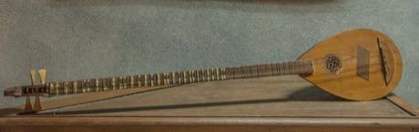

Home / Crossroads and Golden Ages / Mesopotamia, Levant and Arabia
Playable heritage gameBuzuq Long-Neck Lute
Also known as buzuq · بزق
The buzuq is a long-necked lute of the Levant, played with a plectrum on paired metal strings. Its movable frets give the quarter-tone steps of Arab modes, and fast tremolo holds the long notes.


How to play
- Ten lanes in order of pitch: three on the low string course, six on the higher course, and a tremolo lane for quick repeats.
- Notes arrive at the line; strike the matching lane as each one lands.
- Begin with the mode run up and down, then try the tremolo line and the lively dance-song line.
- A tilde marks a quarter-tone note, between a flat and a natural.
Rules at a glance
- The strings are tuned in fourths from a low G, and the notes follow a Rast-like mode with a neutral third and seventh.
- The neutral third is 350 cents and the neutral seventh 1050 cents above the root.
- The tremolo lane repeats two quick strokes; each is judged separately.
- A stroke on the pulse is perfect, a near one is good, and extra strokes cost points.
About the tradition
The buzuq has long been played in Lebanon, Syria and Palestine, and many players know it from folk songs and the music of the twentieth-century Lebanese stage. Its frets are tied on and are often moved to suit the mode being played.
Origins
Usually placed in the era of Crossroads and Golden Ages (about 500 to 1500), although its exact origins are uncertain, within the cultural world of Mesopotamia, Levant and Arabia.
Credits
- Tradition: buzuq music of the Levant; lines written for this game
- Photo: IssamBarhoumi, CC BY-SA 4.0, source on Wikimedia Commons
- Text: CC BY-SA 4.0, World Heritage Games.
Sources

Get the app
Buzuq Long-Neck Lute is one of 11 instruments in the String Music of the World app for iPhone, iPad and Android. Submitted to the App Store and Google Play; in review. Store links appear here the day it goes live. One app, many traditions, no account needed.
More games to play


More from Lebanon


Phoenician Alphabet Trader
Lebanon · Puzzles and mind games